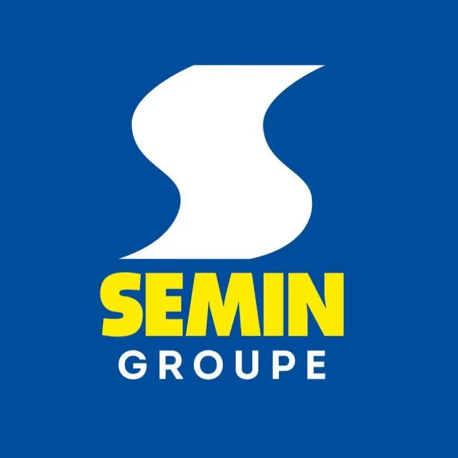
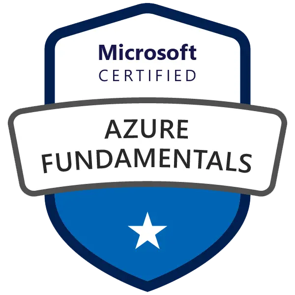
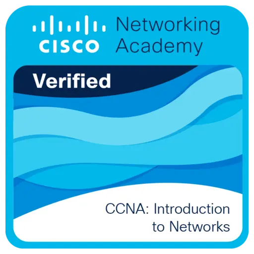
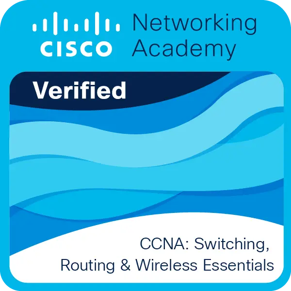
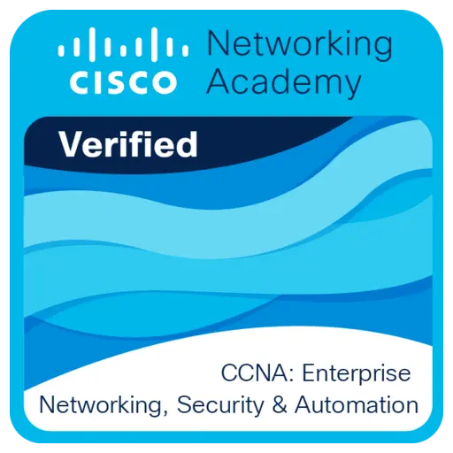
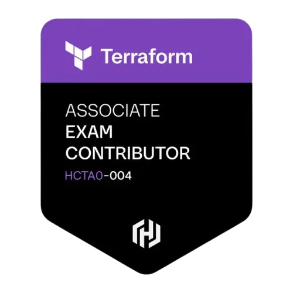
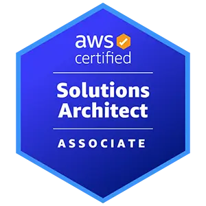

Mon parcours
Qui suis-je ?
En alternance au sein d'un groupe industriel de plus de 500 collaborateurs, j'interviens sur une infrastructure de production multi-sites. Administration système, sécurité réseau, gestion des identités cloud et modernisation des environnements de travail constituent mon quotidien.
Mon expertise est aujourd'hui centrée sur Azure et l'écosystème Microsoft, avec l'ambition de l'élargir progressivement vers AWS et les solutions cloud souveraines. Je construis méthodiquement un profil orienté architecture hybride.
Au-delà de la technique, je suis quelqu'un de curieux et déterminé, qui cherche toujours à comprendre le « comment » et le « pourquoi » derrière chaque architecture.
Mon expérience pro
Basé à Kédange-sur-Canner (Moselle), le Groupe SEMIN est une référence industrielle française (fondée en 1838) spécialisée dans la fabrication de matériaux de construction. Avec plus de 500 collaborateurs et une présence internationale, l'entreprise exige une infrastructure informatique haute disponibilité pour relier ses sites de production et son siège.

Mes missions au quotidien
Support & Environnement Utilisateur
Support N1/N2
- Assistance technique avancée et résolution d'incidents
- Support sur Navision, Salesforce et Office
- Gestion des environnements Citrix
Administration Systèmes & Messagerie
Gestion d'infrastructure
- Maintenance des serveurs d'infrastructure
- Administration Exchange Online
- Gestion du parc Microsoft 365
- Supervision des sauvegardes Commvault
Modern Management
Cloud & Sécurité
- Gestion des identités via Microsoft Entra ID
- Déploiement avec Intune et Autopilot
- Migration PST vers Microsoft Purview
- Configuration Téléphonie Teams
Mon projet professionnel
En octobre 2026, j'intègre le CESI en cycle ingénieur informatique (FISA, accrédité CTI/EUR-ACE) pour une durée de 3 ans. Mes spécialisations seront le Cloud et la Cybersécurité, avec un intérêt marqué pour l'intégration de l'IA dans les architectures de demain.
Mon objectif est de devenir Architecte Cloud, capable de concevoir des infrastructures résilientes et sécurisées, intégrant les services émergents comme l'IA en production. Je vise à terme une carrière internationale, notamment en Asie-Pacifique où la demande pour ces profils est en forte croissance. J'apprends actuellement le mandarin pour préparer cette ouverture internationale.
Mes certifications
Passionné par le cloud, je construis un parcours de certifications aligné avec mon objectif de devenir Architecte Cloud. De l'administration Azure à l'Infrastructure as Code, chaque certification marque une étape vers une expertise orientée production.

Microsoft Certified
Azure Fundamentals
Fondamentaux du cloud Azure : concepts cloud, services principaux, sécurité, tarification et support.
Vérifier sur Microsoft ObtenueMicrosoft Certified
Azure Administrator
Administration des ressources Azure : identité, stockage, réseau, compute et monitoring.
Vérifier sur Microsoft Obtenue
Cisco Networking Academy
CCNA 1
Fondamentaux réseau : modèle OSI/TCP-IP, adressage IPv4/IPv6, commutation et câblage.
Vérifier sur Credly Obtenue
Cisco Networking Academy
CCNA 2
Configuration de réseaux commutés, routage inter-VLAN, Wi-Fi et redondance réseau.
Vérifier sur Credly Obtenue
Cisco Networking Academy
CCNA 3
Sécurité réseau, ACL, VPN, QoS, automatisation et architectures évolutives.
Vérifier sur Credly
HashiCorp
Terraform Associate 004
Infrastructure as Code multi-cloud avec Terraform : workflow HCL, state, modules et HCP Terraform.
Prochaine étapeMicrosoft Certified
Azure Solutions Architect Expert
Conception d'architectures Azure : haute disponibilité, sécurité, coûts et solutions hybrides
2027Microsoft Certified
Azure Security Technologies
Sécurité des identités, des données, des applications et des infrastructures sur Azure
2028
Amazon Web Services
AWS Certified Solutions Architect – Associate
Conception d'architectures cloud AWS : compute, stockage, réseau, sécurité et résilience.
2029